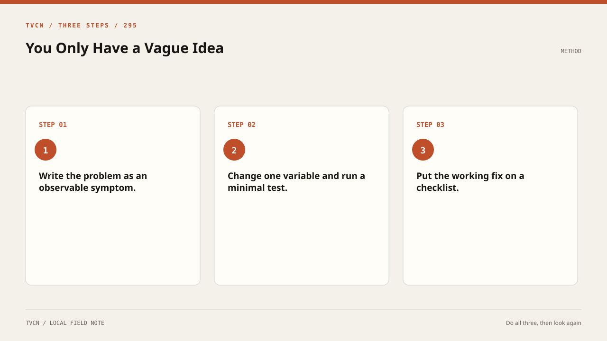

Turn a vague idea into a 30-second test
Do not write a script yet. Fill one page with three lines: who, what they want, what blocks them. If any line is an abstract noun (“growth,” “warmth,” “connection”), replace it with a filmable action.
- Find three references: one for the person's state, one for the space, one for the light. Do not collect films in the same genre; collect the sources of the feeling.
- Record a 30-second spoken pitch on your phone, unedited. Play it for three uninvolved people and ask what they remember. If they remember different things, the idea is not focused.
- Turn the most-questioned sentence into the first scene. If you cannot write an action, keep asking “what is he doing?”
Acceptance: within 30 seconds a listener can repeat “who wants what, and what blocks them.” Only then move to a storyboard; do not discuss gear or style first.
On set
Write three sentences: who wants what, what blocks them, what they lose. If they join into one logline, start the script.
Do this
Write one sentence you can actually shoot: who wants what, what blocks them, and what they lose if they fail. Then compress it into three shots: a person, an action, a result.
- Write three sentences, twenty words or fewer, each with a verb and a concrete object.
- Pick the one you can finish in one room or one street; cut what needs a built set.
- Shoot three tests: a wide for context, a medium for action, a close-up for the result. If they cut together, write scene two.
Three-step flow

Avoid
Do not start with backstory and world-building; a setting you cannot shoot is not a story.
Image note. Covers, diagrams and step images on this page are editorial illustrations or structure diagrams, not photographs of a test performed here; they are not evidence of measured gear performance. Where an image is AI-assisted, the caption says so. Read the test conditions in the text before treating an image as proof.